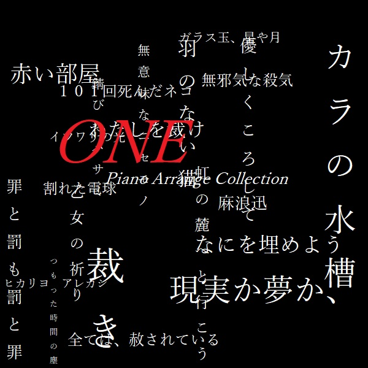

| ||
| Kamuriki Linux | |
|---|---|
| Now Printing |
UbuntuベースのGNU/Linux。LXQtとテーマでMS-Winクラシック風の外観を実現。 ライブ環境から日本語を使えたり、メッセージとかが日本語に翻訳されていたりと日本語に強い。 1系最新版：1.4.4 2系最新版：2.0 |
| Univalent GNU/Linux | |
|---|---|
| Now Printing |
ArchベースのGNU/Linux。現時点で用意してあるのはLXQt、Xfce、Plasma、i3-wm。今後はGNOME版も用意したいな。 最新版：22.08.1 |
| Great Days Image Soundtracks (NJBD-0001) | |
|---|---|
| Now Printing |
オリジナル楽曲 / MP3 128kbps Stereo / 2021.12.05 / 0yen ケ〇Q「素〇ら〇き〇々」のパロディアドベンチャー「素晴らしい日々」のイメージサウンドトラック。 まだ6曲しかデモ音源ができていなかったが、爪痕を残すために発表。作曲歴が短いのでお聞き苦しい点があったかも。 ライナーノーツも読んでね～～～＠＠＠～～ 01. 素晴らしい日々 ～DEMO～ (3:07) 02. 悪夢からの脱出 (2:21) 03. 見上げた星座 ～DEMO～ (1:26) 04. 主よ、人の望みの喜びよ Full Version (3:02) 05. 石造りの海 ～DEMO～ (1:16) 06. 練習曲作品10より 第1番「滝」～DEMO～ (1:42) Composed & Arranged by Jin Asanami |
| ONE Piano Arrange Collection (KNJB-1) | |
|---|---|
 |
版権アレンジ / MP3 128kbps Stereo / 2021.12.05 / 0yen NEXTON「輝く季節へ」のピアノアレンジ。キャッチコピーは「黒歴史、再び。」 黒歴史なのでジャケットも黒いのです(爆)。 元々はパロディアドベンチャー「Zer0」のBGMにする予定だったんだが、改めて聴いてみると「何だこの出来栄えは」って思ってしまいまして…結局MIDIで新たにアレンジしたのを「Zer0」に収録します。 Arranged by Jin Asanami |
| 戻る |